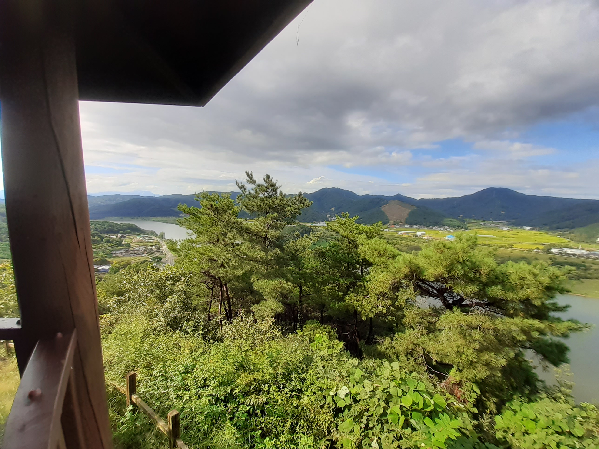
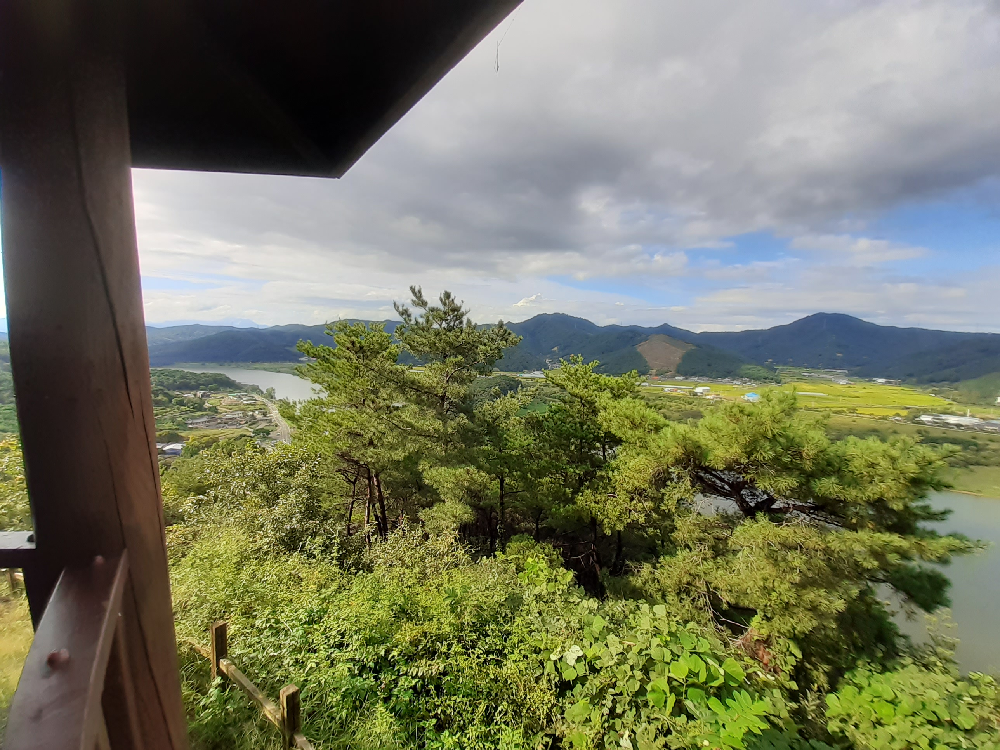

JStory [국토종주편]
JStory [국토종주편]4일차 이야기 : 강정고령보인증센터 ~ 남지읍 숙소 [115km]
길도 안좋고 이정표도 제대로 안되어 있어서 가장 힘들었던 구간 - 낙동사막 + 2개의 업힐
이 날은 인증도장은 2개밖에 찍지 않았지만 가장 힘들었던 구간이다.
보급할 곳도 많이 없고 길도 헤메서 점프를 뛸까도 진지하게 고민했던 구간이기도 하다.
 강정고령보인증부스에서 잃어버린 지갑을 수령하러 대구화원경찰서 도착..!
강정고령보인증부스에서 잃어버린 지갑을 수령하러 대구화원경찰서 도착..!
4일차 시작은 대구화원경찰서로 가서 지갑을 찾는걸로 시작된다..!
지갑을 무사히 찾고서는 달성보를 향해 달리고 있었는데 비구름이 무섭게 몰려오기 시작했으며 잠시후 바로 폭우가 쏟아지기 시작했다.
갈 길이 멀었던 우리는 우비를 입고 우중라이딩이 시작되었다.
 달성보인증센터
달성보인증센터
그렇게 달성보를 지나 낙동강 첫 대표업힐 다람재를 넘기 위해 달려갔다.
비는 다행이도 다람재를 가지전에 그쳤으며 얼마후에는 언제 비가 왔냐듯이 해가 나왔다~
비온 뒤 하늘은 정말 멋있었으며 기분 좋게 라이딩을 해서 다람재까지 갔다.
 
비온 후 갠 다람재 정상의 모습은 사진에 담기지 않을 정도로 멋있었다

비온 후 갠 다람재 정상의 모습은 사진에 담기지 않을 정도로 멋있었다
다람재 다운힐을 신나게 하고 얼마지나 무심사에 도착하였다.
무심사는 우회를 할 수 있었는데 우리는 무심사를 올라가는 것을 택했다.
(여기서부터 고생 시작)


 무심사 전경
무심사 전경
무심사를 넘은 후 조금만 더 달리니 합천창녕보인증센터가 나왔고 4일차 마지막 인증이 여기서 끝났다.
창녕함안보로 가기전에 해가 지려고 했으며 우리는 출발하기 전에 합천창녕보 인근 편의점에서 저녁을 먹으면서 루트를 고민했다.
본래 목적지는 남지읍 코인세탁소였는데 남지까지 괘 많이 남았던 상황이였다.. (이 당시 시간이 저녁 7시40분정도)
같이 달리던 동생은 해가 지더라도 무조건 박진고개와 영아지고개를 넘겠다고 하였고, 나는 옆으로 우회해서 창녕군청에서 숙소를 정해야한다는 의견이였다.
그래서 다음날 부산하굿둑에서 보자구하고 아는동생은 먼저 박진고개쪽으로 출발하였다.
하지만 동생혼자 박진고개랑 영아지고개로 보낼수가 없었던 난 15분 뒤에 동생따라 박진고개를 향해 달려갔다.
박진고개로 가는 길은 가로등, 민가하나 없어서 정말 어두웠으며 라이트 하나에 의존하면서 열심히 달려갔다.
 창녕함안보에서 남지읍으로 가는 67번 지방도 구간 (본 국토종주 루트가 아님)
창녕함안보에서 남지읍으로 가는 67번 지방도 구간 (본 국토종주 루트가 아님)
한참을 박진고개를 간다고 달리던 순간 어두워서 길을 잘못들었는지 자전거도로는 사라지고 왠 1차로 국도하나가 나왔다.
어쩔수 없이 공도라이딩이 시작되었고 얼마가지 않아서 낯익은 목소리가 옆에서 들렸다..
다름 아닌 아는 동생이였던 것이다ㅋㅋ
둘다 박진고개로 가는 정식루트가 아닌 79번국도 한복판에서 재회한 것이다..
우리는 인연이라고 생각하고 안개가 자욱한 79번국도를 벗어나기 위해 열심히 달렸고 얼마후 남지읍에 도착할 수가 있었다.
많은 우여곡절이 있었지만 결론적으로 본래 목표했던 남지읍 코인세탁소에 도착했고 도착하자마자 옷과 신발을 바로 세탁하였다..!
4일차가 제일 스펙타클하지 않았나 싶다~